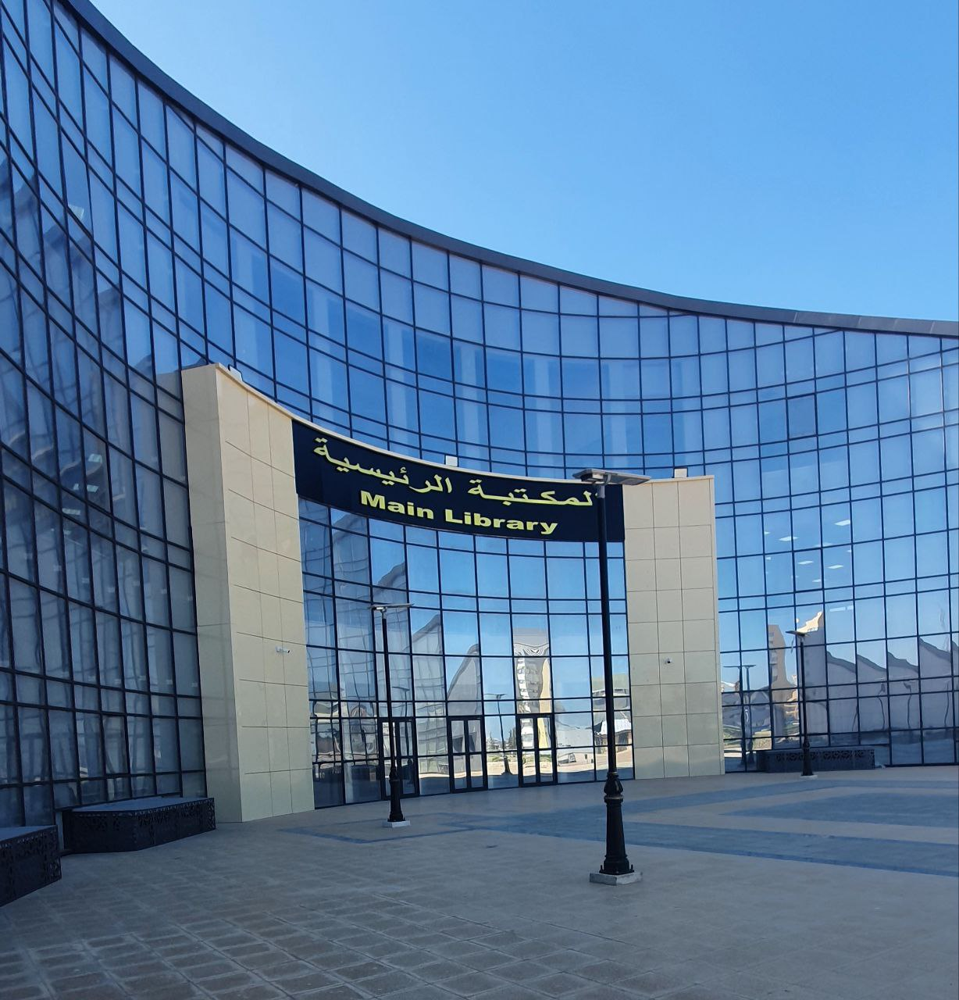

My First Year in College Reflections: Lessons and Experiences
25 jul 2024
Written by kessad Mohamed Dhia Eddine
Good mark student & Second Year NSNN
Introduction:
Welcome to my article about my first year at NSNN. Here, you will find my story and some lessons I learned from this year. I hope this will inspire you.
To introduce myself, I’m Dhia, currently enrolled in the second year of the National School of Nanoscience and Nanotechnology. I have a lot of ambitions for our field.

The acadamic side
I'm sure that most of you are interested in this section. The most important thing I want to mention is that I didn't find studying difficult at all. Well, I had reasons for not doing better than I did this year. I believe anyone in this school can easily receive a mark in the range of 12–14/20. You might think it's difficult to study 11 modules every semester, but believe me—more than half of them, like economics and ingenierie, only require a weekly review. That doesn't even include the language modules. On the other hand, math modules require practice and repetition. Additionally, you must comprehend the examples that the professors use in chemistry and physics, which is why it's important that you attend lectures. The biggest error I made was skipping the morning sessions. Additionally, you shouldn't take any of the modules lightly because failing even the ones with the lowest Coeff can result in expulsion from the institution. We're done with our modules. Finally, try to be creative and work hard on any projects or research you have for any modules. This will motivate you, especially if you receive the perfect mark.
My Social life:
Many people think you have to be anti-social to succeed on your journey to becoming your greatest self, whether as a scientist or an entrepreneur. However, this is totally wrong and can even make your journey more difficult.
Throughout your life, you need to make connections with people, especially colleagues and professors.
Colleagues:
I advise you to keep a clear distance from everyone you don’t know on campus during the first few months and observe the people around you. It won’t be long before you find a good group of friends to share your ideas with. If you’re interested in clubs, I invite you to our open science and culture club, Hexagon Scientific Community. It has four departments: one for science and research, another for math and information, one for developing soft skills, and finally, one for religion-related activities.
Professors:
They can offer you unforgettable opportunities. To build a connection, share your unique ideas about the lesson after the session or discuss topics outside the curriculum. Don’t just ask questions, but engage in discussions and don’t be afraid to challenge them sometimes. Always find time to research an aspect of the chapter and, after preparing a good paper, present it to your professor as a voluntary research effort. They will likely provide you with valuable feedback, which will push you further on your scientific journey.

Some Speciale days:
I didn't have many speciale days in this year, I was just studying and doing my stuff in the cumpus. But there's one day that stands out when I visited a Technical Lab for nanotechnology, It was so exiting to see how people who were just a students like us become researches and now are working on stuff we cannot imagine. I took these two pictures it may interst you.
Important advices:
It's important to keep your distance in the first few months on campus and try to get used to the environment as quickly as you can. Start preparing from the day you arrive, and don’t skip courses or abandon a module. Try to be consistent and review your modules daily.
Also this is my cat "Mina".
Farewell